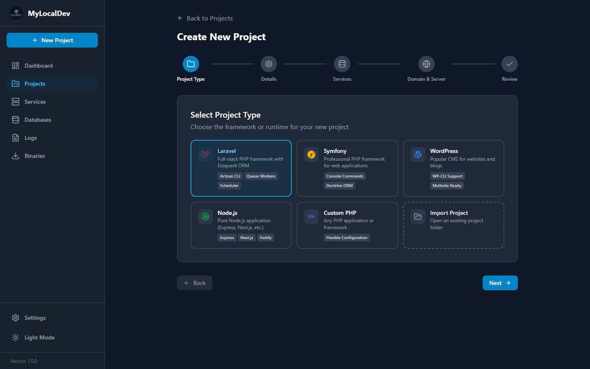

1
The domain does not resolve
Confirm the hosts entry was added — the app asks for administrator rights the first time it writes one. Restart the browser afterwards.
No PHP on the PATH, no global Composer, no Docker daemon. The app brings its own runtimes.
You do not need PHP, Node.js, MySQL or Composer installed beforehand. If they already exist, they are left untouched.
Open Binaries and add a PHP build — 8.3 or 8.4 is a safe start. Nginx and a database follow the first time a project needs them.
On first project start, allow the app to add its local CA. Without it, HTTPS projects show a browser warning.
Use the wizard for a new Laravel, Symfony, WordPress or Node app — or add an existing folder and keep its files exactly as they are.
The project appears on your-project.test. Start it, open the URL, done.

The wizard asks for the framework, the PHP or Node version, the web server and the services you want. It then builds a virtual host and database to match.
Inside a project directory, the usual tools resolve to that project's versions.
# uses the project's PHP version php artisan migrate composer require laravel/sanctum # outside a project, the default version applies php -v
# Node and npm match the project npm install npm run dev # talks to the active MySQL or MariaDB build mysql -u root -p my_project
Application data, databases, certificates and logs sit under your user profile in a single folder, with downloaded runtimes in the app's own resource directory. The Settings screen shows both paths, so nothing is hidden.
Confirm the hosts entry was added — the app asks for administrator rights the first time it writes one. Restart the browser afterwards.
Another server is already listening. MyLocalDev reports which process holds the port and can move the project to alternate ports.
The local certificate authority is not trusted yet. Re-run the trust action from the project or settings screen.
Import it, pick its original versions, and see whether the machine finally behaves.